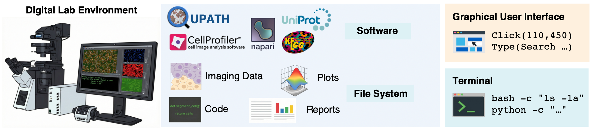
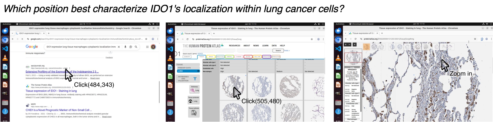
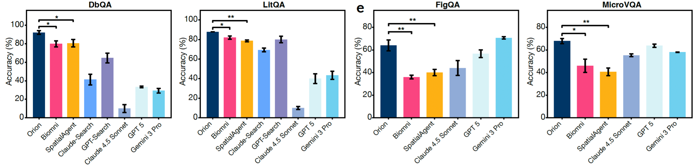
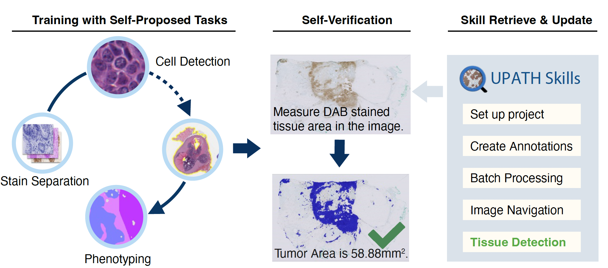
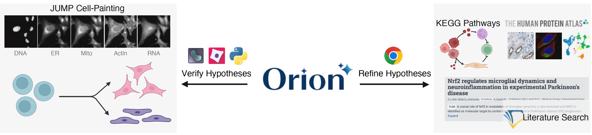

Modern discovery increasingly depends on computational workflows that connect experimental data to analysis, interpretation, and follow-up hypotheses. Yet these workflows remain labor-intensive — built on specialized software, visual inspection through graphical user interfaces, and the integration of knowledge across many scattered sources.
Most AI agents for biology are confined to text interfaces or predefined APIs. They cannot click through a figure, pan across a whole-slide image, or operate the interactive scientific tools that real discovery depends on. To automate this computational layer, an agent needs to do what a scientist does — use a computer.
We introduce Orion, a computer-using AI agent that combines code execution with GUI-based control. It navigates digital figures with complex hierarchical structure, extracts detail from thousands of multimodal inputs, and connects evidence across steps to generate coherent hypotheses — sustaining fully automated pipelines of more than 300 sequential actions, and moving towards genuine lab automation.

Orion mirrors the skills of a human scientist through two integrated interfaces. A terminal navigates the file system and executes Python for data processing; a GUI interface perceives the screen and operates off-the-shelf software through mouse and keyboard. A hierarchical architecture keeps long-horizon work tractable — a controller manages global strategy while specialized GUI subagents are spawned on demand and intermediate results are externalized to disk.

Many biological databases expose details only through a GUI, and scientific figures carry information that text-only agents simply cannot reach. Orion browses the web and inspects images through the same interfaces a researcher uses — zooming into high-resolution staining, navigating multi-panel figures, and querying databases directly.
Orion achieved over 90% accuracy on biomedical database and literature retrieval — outperforming text-only deep-research agents that never see the underlying images.

Using public tutorials, Orion taught itself to operate unfamiliar scientific software — from CellProfiler for microscopy image analysis to QuPath for digital pathology — drafting workflows programmatically and debugging them visually when results fell short. It verifies its outputs against ground truth, corrects errors, and distills each solved task into a reusable skill, building a curriculum from simple tasks toward advanced analysis.

Whole-slide images span centimeters of tissue down to micron-scale subcellular detail. Operating QuPath, Orion learned the intuitive "click-hold-drag" motor skills needed to define regions of interest, and developed a hierarchical browsing pattern — alternating broad tissue exploration with fine-grained local inspection.
Localizing and segmenting breast-cancer metastases in lymph-node slides, Orion beat a SAM baseline by +12.3% F1 and +15.5% spatial IoU, performing comparably to a human annotator.
We challenged Orion with hypothesis generation on JUMP — the largest public optical screening dataset, with Cell Painting profiles for over 15,000 genetic perturbations. Across four days of autonomous operation, Orion mined the data for disease-associated genes and distinctive phenotypes, integrating imaging evidence with knowledge from KEGG, the Human Protein Atlas, and the literature.
It generated 52 detailed reports; human review prioritized 22 plausible mechanistic hypotheses — spanning mitochondrial dysfunction, cell-cycle arrest, and organelle depletion, linked to cancer, metabolic, and neurodevelopmental disease.

With light-touch human feedback, Orion went beyond description to propose biologically grounded, mechanistically distinct hypotheses — correcting its own segmentation and normalization mistakes along the way.